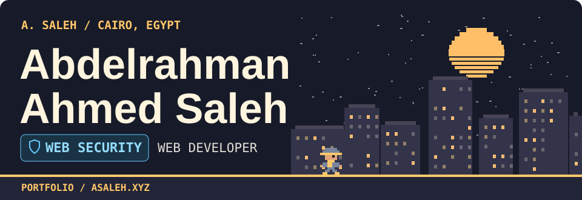
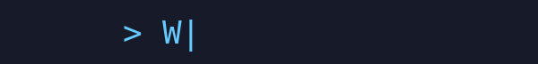
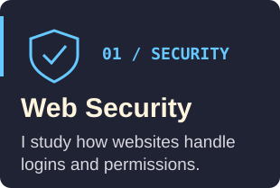
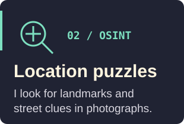
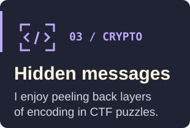
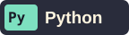

Hey, I’m Abdelrahman 👋
I’m Abdelrahman, a web developer from Cairo with a focus on web security. I’m interested in how websites handle authentication and access control. I also enjoy solving OSINT and cryptography puzzles in CTFs.
What I’m into



My toolkit

Explore my portfolio ↗